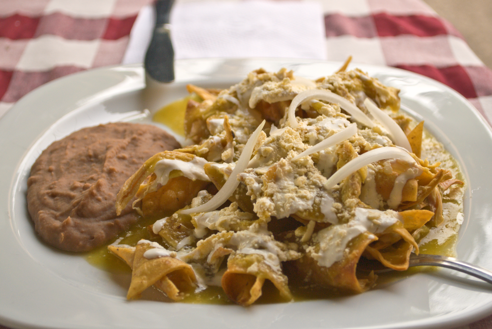

Chilaquiles

Ingredientes
- 12 tortillas de maíz
- 4 jitomates
- 2 chiles guajillo
- 1 diente de ajo
Pasos
- Cortar las tortillas en triángulos.
- Freír las tortillas hasta que estén crujientes.
- Preparar la salsa.
- Mezclar los totopos con la salsa.
- Servir y agregar crema y queso.